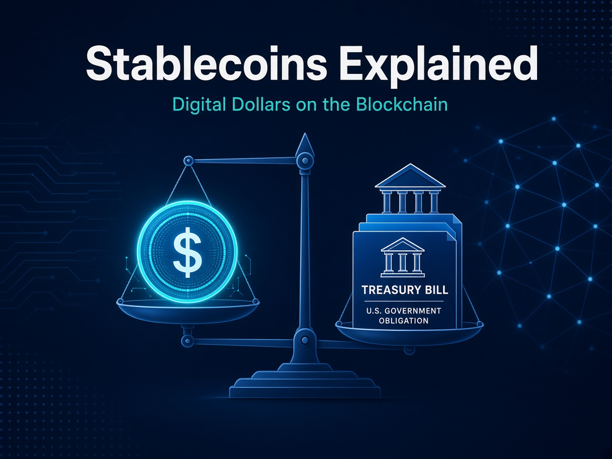

Stablecoins
Stablecoins Explained: Digital Dollars on the Blockchain

A stablecoin is a digital token designed to hold a steady value, usually pegged 1:1 to a currency like the US dollar. It moves on a blockchain like any crypto asset, but without the wild price swings. For every token issued, the issuer is meant to hold an equal amount in reserves such as cash or short-term government bonds.
Why everyone keeps talking about them
- Fast and borderless. Stablecoins can move across the world in minutes, 24/7, often for a fraction of traditional transfer costs.
- The bridge between TradFi and crypto. They're widely used for trading, payments and settlement in decentralised finance (DeFi).
- Rapid growth. Total stablecoin market value reached about US$317 billion by April 2026, according to a US Federal Reserve note.
- Clearer rules. The US GENIUS Act, signed in July 2025, requires payment stablecoin issuers to hold at least 1:1 approved reserves and publish regular reserve reports.
Only as strong as the reserves
Reserve quality differs between issuers, transparency varies, and a loss of confidence can still break the peg.
Where this is heading
Stablecoins are quietly becoming the plumbing of digital money, and understanding how they work is a smart first step for anyone exploring Web3.
This article is for general information and education only. It is not financial, investment or legal advice.